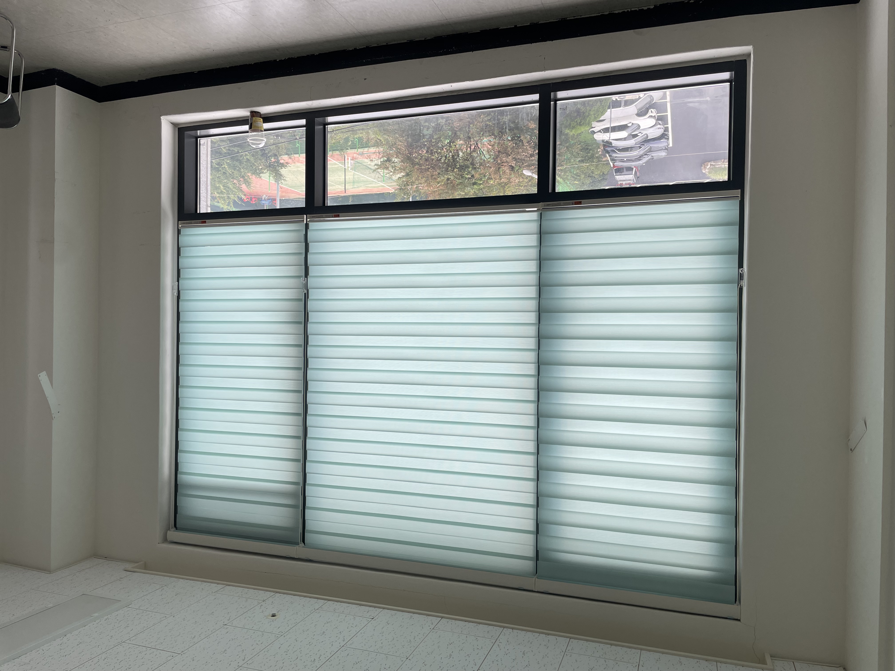
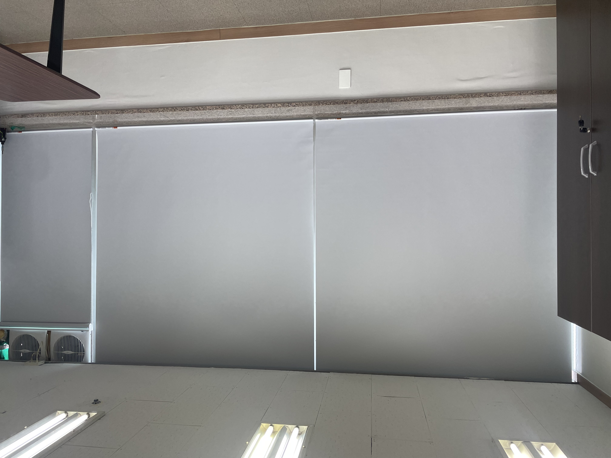
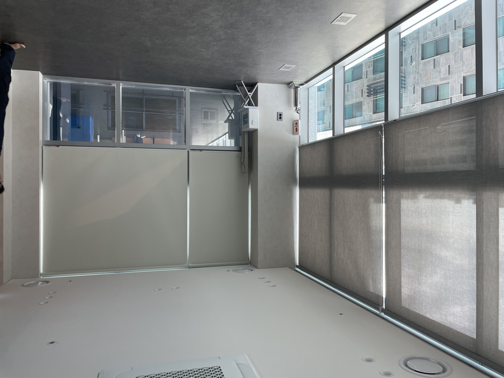
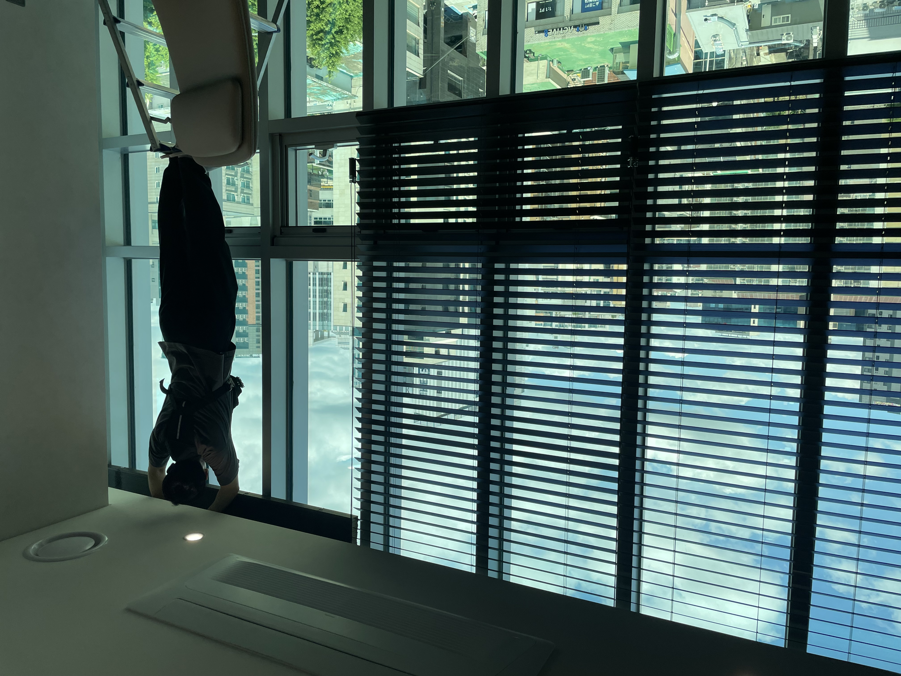

안녕하세요, 수도권 커튼·블라인드 전문 드리움 커튼&블라인드입니다. 사무실 블라인드는 집과 고민 포인트가 조금 달라요. 집은 분위기와 숙면이 중요하다면, 사무실은 모니터 눈부심 차단, 외부 시선 가림, 그리고 업무에 지장 없는 채광이 핵심이죠. 오늘은 사무실에 많이 쓰는 블라인드 종류를 비교하고, 공간별로 어떤 걸 고르면 좋은지 실제 시공 사진과 함께 정리해드릴게요.

■ 사무실 블라인드, 왜 신중히 골라야 할까
사무실은 하루 대부분을 머무는 공간이에요. 블라인드 선택을 잘못하면 오후 햇빛이 모니터에 반사돼 눈이 피로하거나, 맞은편 건물에서 내부가 들여다보여 신경 쓰이거나, 반대로 너무 어두워 조명을 계속 켜야 하는 일이 생깁니다. 그래서 사무실은 "채광은 적당히 들이되, 눈부심과 시선은 막는" 균형이 중요해요.
■ 사무실에 많이 쓰는 블라인드 4가지
1. 콤비블라인드 — 가장 무난한 선택

콤비블라인드는 투명 원단과 불투명 원단이 번갈아 겹쳐진 구조라, 원단을 조금씩 어긋나게 조절하는 것만으로 빛을 은은하게 들이거나 외부 시선을 완전히 가리거나 세밀하게 조절할 수 있어요. 채광과 프라이버시를 둘 다 잡아야 하는 사무실에 가장 무난하게 어울리는 제품입니다. 중소 사무실, 상담실, 원장실 등 폭넓게 추천해요.
2. 롤스크린 — 깔끔하고 가성비 좋은

롤스크린은 원단 한 장으로 창을 깔끔하게 덮어주는 가장 심플한 제품이에요. 구조가 단순해 가성비가 좋고, 넓은 창을 여러 개 통일감 있게 시공하기 좋습니다. 원단 차광도를 선택할 수 있어서, 완전 차광이 필요한 회의실·영상실에는 암막 원단으로, 일반 사무공간은 적당한 채광 원단으로 맞출 수 있어요.
3. 썬스크린(매쉬) 롤스크린 — 채광은 살리고 자외선만 차단

썬스크린(매쉬) 원단은 촘촘한 망 구조라, 바깥 풍경과 채광은 유지하면서 자외선과 눈부심만 걸러주는 제품이에요. 전망 좋은 고층 사무실이나, 밝은 분위기를 유지하고 싶은 오피스에 특히 인기가 많습니다. 내리고도 답답하지 않은 게 가장 큰 장점이에요.
4. 우드블라인드 — 고급스러운 분위기가 필요할 때

우드블라인드는 슬랫(날개) 각도로 빛을 정밀하게 조절할 수 있고, 공간의 격을 한층 높여주는 제품이에요. 대표실, 변호사·세무사 사무실, 병원 원장실, 고급 상담 공간처럼 분위기가 중요한 곳에 잘 어울립니다. 블라인드 하나로 인테리어 완성도가 확 올라가요.
사무실 공간별 추천 요약
- 일반 사무공간 · 콤비블라인드 또는 롤스크린
- 회의실·영상실 · 암막 롤스크린 (완전 차광)
- 전망 좋은 고층 · 썬스크린(매쉬) 롤스크린
- 대표실·상담실 · 우드블라인드
■ 사무실 블라인드, 이것만은 꼭 체크하세요
첫째, 창 개수가 많을수록 통일감이 중요해요. 같은 제품·같은 색으로 맞춰야 공간이 정돈돼 보입니다. 둘째, 여닫는 창이 있다면 환기 동선을 고려해 사이즈를 맞춰야 해요. 블라인드가 창을 꽉 막아버리면 환기가 불편해지거든요. 셋째, 설치 위치(천장 vs 창틀)에 따라 마감이 달라지니, 현장 여건에 맞게 정하는 게 좋습니다.
드리움은 이런 부분을 직접 방문 실측해서 꼼꼼히 확인하고, 사무실 특성에 맞는 제품을 제안해드려요. 가정집은 물론 사무실·상가·병원·학원 등 다양한 공간을 시공한 경험이 있습니다.
■ 정리하면
사무실 블라인드는 무난함은 콤비블라인드, 가성비·통일감은 롤스크린, 채광 유지는 썬스크린, 고급스러움은 우드블라인드로 기억하시면 쉬워요. 공간의 용도와 창 상황에 따라 최적의 조합이 달라지니, 고민되시면 무료 방문 상담으로 제품을 직접 보고 결정하시는 걸 추천드립니다.
서울·경기·인천 전 지역, 사무실·상가 블라인드도 편하게 문의 주세요. 직접 실측부터 시공까지 책임지고 진행합니다.
📞 010-8353-5979
🌐 deurium.co.kr